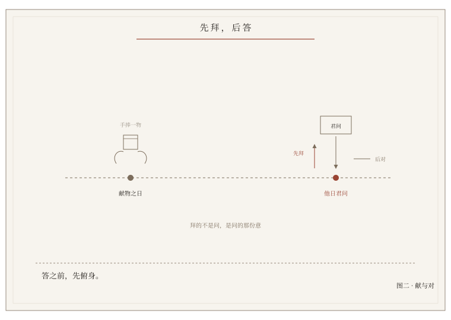

曲礼下 · 二·三十四 · 第 157 课
士向国君献物，另一日君问他：「这些东西从哪儿来的？」士再拜稽首，然后回答。注「起敬也」。
说什么事：士有献于国君，他日，君问之曰「安取彼」，再拜稽首而后对。
落在哪一层：礼，兼及礼意。所答只一句，所重在那先拜后答的一步。
为何编在此位：上节论无故不去玉，此节转向臣下献物与对问。皆是小节，皆见分寸。
【经】士有獻於國君，他日，君問之曰：「安取彼？」再拜稽首而後對。
【注】起敬也。
【疏】此一节论大夫士馈献之事。「士有献」者，谓士有物奉贡于君也。「他日，君问之曰，安取彼」者，「他日」谓别日也，非是献物之日。「安取彼」，犹何处取彼物。别日君问士云：「何处得前所献之物？」所以须问者，士卑德薄，嫌其无有也。不即问而待他日者，士有贡献，当日乃自致于外，而不敢容易见，恐君答己拜，故别日乃见君，君得问之也。「再拜稽首而后对」者，士闻君问，故先拜稽首，而后起对得物所由。
献 奉贡。疏「士有物奉贡于君」。
他日 注疏「别日」，非献物之日。
安取彼 安，何处。彼，指前所献之物。
嫌其无有 疏语。士卑德薄，君疑其无此物可取。
稽首 拜之最重者。先拜后对。
起敬 注二字。先拜者，非为答问，为敬。
士有物献于国君。过了些日子，君问他：「那些东西是哪里得来的？」士再拜稽首，然后回答。
此节记一件极小的事：君问一句，士先拜再答。所问不过物之来处，所重在那一步拜。礼的分量常不在答得对不对，而在答之前先俯身。
第一层 他日乃见 疏说士献物之日只「自致于外」，不敢即见君，恐君答己之拜。这一层极见分寸：送礼的人先避开了被答谢的时刻。
第二层 君问非疑 疏「士卑德薄，嫌其无有也」。君问来处，是因为以士之位，未必有此类物。此问不带责怪，带一层审慎。
第三层 先拜后对 疏「先拜稽首，而后起对」。问的是物，拜的是问。此礼在君臣之间立一个次序：受问先谢，答在后。
第四层 注只二字 「起敬也」。郑注在此极简。拜不是程序，是敬的起身。
与今日何干 人问你东西从哪来，先谢他问，再答出处。今人以为多余，礼以为本分。
| 左 | 右 |
|---|---|
| 士有献于国君 | 有物奉贡 |
| 他日君问之 | 别日，非献物之日 |
| 安取彼 | 问物之来处，非索物 |
| 嫌其无有 | 士卑德薄，故审其来处 |
| 再拜稽首而后对 | 先拜后答 |
| 起敬也 | 注二字，拜非程序 |
画左右两个时点，以一条横轴相连：左端画一只捧起的双手托着一件包裹（包裹只画方巾包起的轮廓，巾角打结），轴上一枚小圆标「献物之日」的位置；右端画一张空案与一枚方印形（示意君问），空案与轴之间一道向上的短箭（示意先拜），箭旁另有一道更短的箭指向空案（示意后对）。两时点之间的轴画成虚线，示意隔了日子。不写文字。赭色只用在右端那支向上的短箭上。
